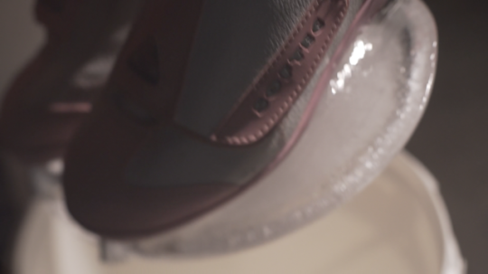

soft tech, 2018
wood block, chain, skates, ice, bucket, contact mic
a pair of skates is embedded in a patina of ice. the sounds of falling droplets are amplified and modulated, oscillating between calm and calamitous
exhibited at the granoff 2017 spring arts festival

such is suchness, 2017
contact mic, headphones, meditation chamber
set against a backdrop of algorithmically generated sine waves, "such is suchness" offers big data transcendentalism in the form of a guided meditation
exhibited at the MIT Museum
expo iv, 2017
a new media showcase from the brown and risd community. curation and exhibition design by lynn tachihara, noah ezer, andy li and cj park